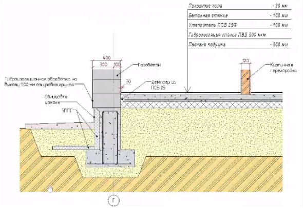
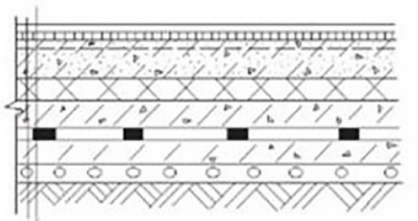

<section class="technodes">
    <div class="container">
        <div class="breadcrumb">
            
            <div class="breadcrumb__item">Проектировщикам</div>
            <div class="breadcrumb__item">Технические узлы</div>
        </div>
        <div class="section__header">
            <p class="section__text">Сопроводительные документы, которые отражают характеристики материалов, методы изготовления.</p>
        </div>
        <p class="technodes__ctamore">
            Чтобы узнать больше, позвоните нам по номеру телефона или <span class="secondary-color">закажите звонок</span>.Наши менеджеры подробнее расскажут вам и ответят на имеющие вопросы.
        </p>

        <div class="technodes__wrapper">
            <h2 class="title title_h2 technodes__title">АДМИНИСТРАТИВНЫЕ И ОБЩЕСТВЕННЫЕ ЗДАНИЯ</h2>
            <div class="technodes__block">
                
                <ul class="technodes__description">
                    <li>Плитка керамогранитная</li>
                    <li>Напольный клей MasterMatrix® SCC 210</li>
                    <li>Грунтовка MasterMatrix® SCC 210</li>
                    <li>стяжка  MasterMatrix® SCC 210</li>
                    <li>грунтовка  MasterMatrix® SCC 210</li>
                    <li>Железная плита перекрытие  MasterMatrix® SCC 210</li>
                </ul>
            </div>

            <h2 class="title title_h2 technodes__title">ПРОМЫШЛЕННЫЕ ЗДАНИЯ</h2>
            <div class="technodes__block">
                
                <ul class="technodes__description">
                    <li>Эпоксидное покрытие</li>
                    <li>самовыравнивающаяся смесь  MasterMatrix® SCC 210</li>
                    <li>Грунтовка MasterMatrix® SCC 210</li>
                    <li>стяжка  MasterMatrix® SCC 210</li>
                    <li>полиэтиленовая пленка</li>
                    <li>Бетонное основание из бетона класса В</li>
                    <li>стяжка из цементно- песчаного раствора марки  MasterMatrix</li>
                    <li>Грунт основания</li>
                </ul>
            </div>
        </div>
    </div>
</section>